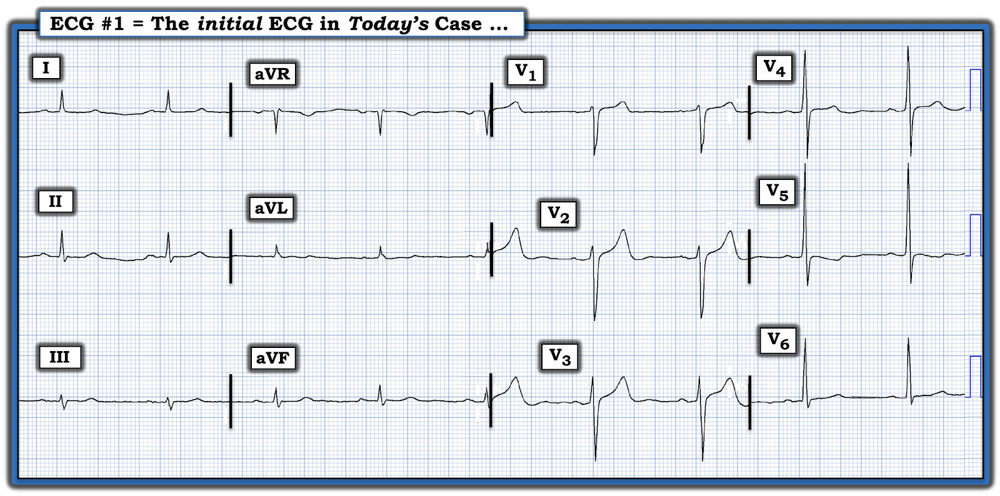
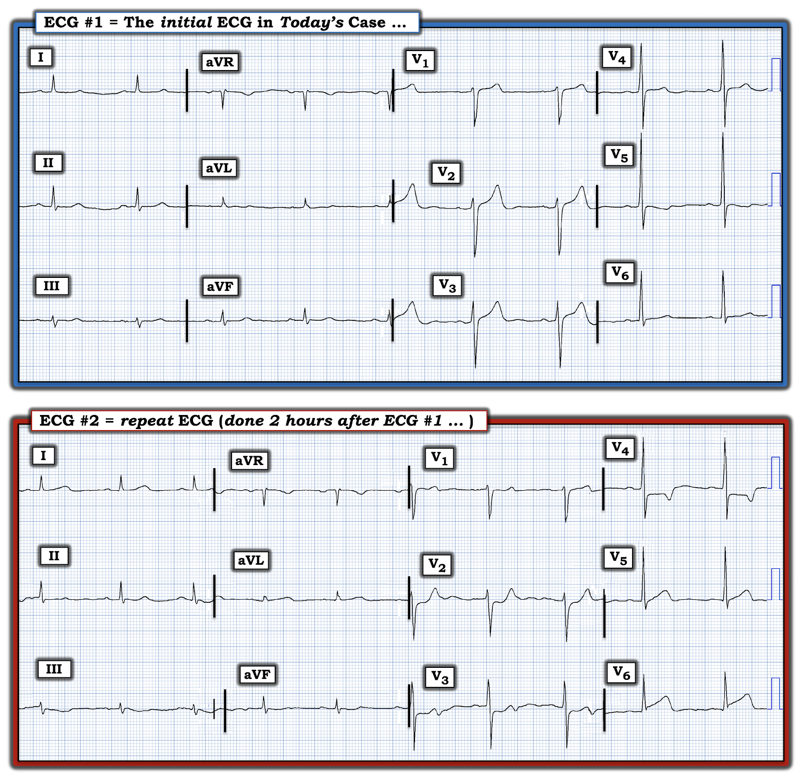
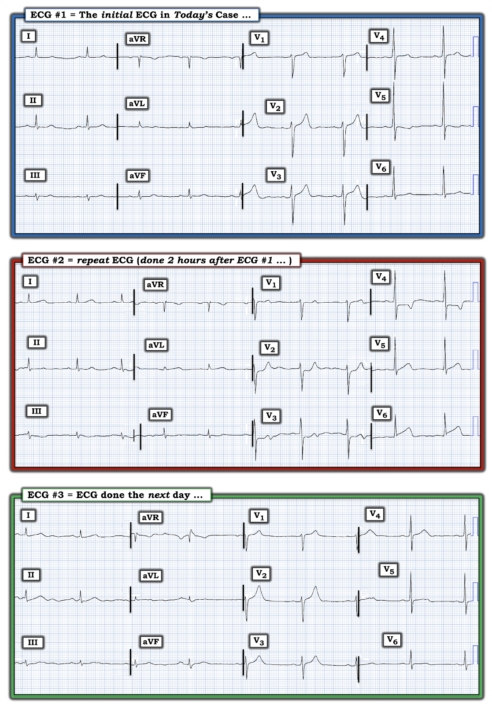

ECG Blog #377 — Điện tâm đồ đầu tiên có bình thường không?
Bệnh nhân có điện tâm đồ ban đầu trình bày ở Hình 1 — là một người đàn ông trung niên đến ED (Khoa Cấp cứu) vì CP (Đau Ngực) mới khởi phát. Bệnh nhân ổn định huyết động vào thời điểm ghi bản ghi này.
- Bệnh nhân vẫn còn CP vào thời điểm ghi điện tâm đồ #1 — dù mức độ CP chưa rõ (tức là, Người ta không biết LIỆU CP của bệnh nhân khi đó đang tăng lên — giữ nguyên — hay giảm đi — vào thời điểm ghi điện tâm đồ ở Hình 1).
CÂU HỎI:
- Với bệnh sử trên — BẠN sẽ diễn giải điện tâm đồ ban đầu như thế nào?
- TẠI SAO cần đối chiếu mức độ CP của bệnh nhân này với điện tâm đồ #1?


SUY NGHĨ CỦA TÔI về Điện tâm đồ Ban đầu ở Hình 1:
Điện tâm đồ #1 cho thấy nhịp xoang ~60 lần/phút. Mọi khoảng (PR, QRS, QTc) và trục đều bình thường. Không có lớn buồng tim (tức là, Dù biên độ sóng R hơi cao ở chuyển đạo V5 — biên độ QRS vẫn chưa hẳn đạt tiêu chuẩn điện thế của LVH).
Về Thay đổi Q-R-S-T:
- Sóng Q — không thấy trên bản ghi này.
- Tăng tiến sóng R — bình thường, với vùng chuyển tiếp (nơi chiều cao sóng R trở nên lớn hơn độ sâu sóng S) xảy ra bình thường giữa các chuyển đạo V3-V4.
Về
Thay đổi ST-T — Các thay đổi này không có giá trị chẩn đoán …
- Ở các Chuyển đạo Chi — điện thế QRS khá thấp. Có ST-T dẹt không đặc hiệu, nhưng trông không giống cấp tính.
- Ở các Chuyển đạo Ngực — Chuyển đạo trông bất thường nhất là chuyển đạo V5, với đoạn ST võng xuống, nhưng không có điểm J chênh xuống. Hình dạng ST-T tổng thể ở chuyển đạo này giống “tăng gánh” thất trái (LV “strain”) hơn là thiếu máu cục bộ. Có ST-T dẹt không đặc hiệu ở các chuyển đạo kế cận V4 và V6.
- Sóng T dương và nhọn ở các chuyển đạo V1,V2,V3 phía trước. Điểm J chênh lên nhẹ thấy ở các chuyển đạo này là không bất thường ở chuyển đạo V2 và V3 (vốn thường có ST chênh lên nhẹ như một hiện tượng bình thường) — nhưng chuyển đạo V1 thường không có ST chênh lên chút nào (trong khi điểm J có chênh lên nhẹ ở chuyển đạo V1 của điện tâm đồ #1). Cuối cùng — khó xác định liệu biên độ sóng T ở chuyển đạo V2 có hơi không tương xứng với độ sâu sóng S ở chuyển đạo này hay không.
ĐIỂM THEN CHỐT (PEARL) #1: Khi sóng T ở các chuyển đạo ngực dương (như trong Hình 1 — ngoại trừ sóng T ở chuyển đạo V5) — thì sóng T ở chuyển đạo V1 thường không cao hơn sóng T ở chuyển đạo V6. Dù sự "Mất cân đối" này của sóng T trước tim không thường gặp lắm — trong bối cảnh lâm sàng “phù hợp”, nó có liên quan với OMI (Occlusion-based MI — nhồi máu cơ tim do tắc) mới xảy ra, thường gặp nhất do động mạch thủ phạm là LCx (Xem Manno và cs.: JACC 1:1213, 1983 — và bài viết ngày 17 tháng 7 năm 2013 của Salim Rezaie trên ALiEM — và ECG Blog #350).
ĐIỀU CỐT LÕI Về điện tâm đồ #1:
Điện tâm đồ ban đầu của ca hôm nay không có giá trị chẩn đoán một biến cố cấp. Dù vậy — ở người đàn ông trung niên đến ED vì CP mới khởi phát này — có một số dấu hiệu điện tâm đồ đáng lo ngại. Gồm có.
- ST-T dẹt không đặc hiệu kín đáo-nhưng-có-thật ở 5 trong số các chuyển đạo chi.
- "Mất cân đối" sóng T ở các chuyển đạo ngực — trong đó sóng T dương ở chuyển đạo V1 không chỉ cao hơn sóng T ở chuyển đạo V6 — mà còn có ST chênh lên nhẹ ở chuyển đạo V1 — và sóng T ở chuyển đạo V2 có thể cao không tương xứng.
- Điều ủng hộ khả năng các dấu hiệu này là cấp tính — là ST-T dẹt bất thường một cách không điển hình ở các chuyển đạo ngực bên V4,V5,V6. Điều chống lại việc ST-T võng xuống ở chuyển đạo V5 là biểu hiện của "tăng gánh" thất trái — là sóng T dương và không hề có đoạn ST võng xuống ở chuyển đạo V6 nằm về phía bên hơn.
- Xin nhấn mạnh: Nếu xét riêng lẻ — Không bất thường ST-T nào ở trên có giá trị chẩn đoán một biến cố cấp. Nhưng khi xét chung, cùng với bệnh sử CP mới khởi phát — Chúng ta không thể loại trừ một biến cố tim cấp (hoặc mới xảy ra) chỉ dựa trên một bản ghi duy nhất này. Vì vậy — điện tâm đồ #1 không phải là bản ghi "bình thường" (và theo dõi lâm sàng sát là điều thiết yếu!).
ĐIỂM THEN CHỐT (PEARL) #2: Điều quan trọng là cần hiểu rằng diễn tiến của nhồi máu cơ tim cấp do tắc động mạch vành cấp — thường ngắt quãng (staggered). Ý tôi là — ngay cả khi không có PCI hay điều trị tiêu sợi huyết, mạch "thủ phạm" vẫn có thể tự mở lại. Đôi khi mạch "thủ phạm" vẫn mở — nhưng những lúc khác, nó có thể tắc lại vào bất kỳ thời điểm nào. Và, đôi khi quá trình tự mở lại rồi đóng lại này có thể xảy ra nhiều lần liên tiếp trong thời gian ngắn.
- Lý do cần luôn đối chiếu sự hiện diện (và mức độ tương đối) của CP với từng điện tâm đồ ghi liên tiếp trên bệnh nhân — là vì làm vậy có thể giúp nhận biết vào mỗi thời điểm trong quá trình này, mạch "thủ phạm" nhiều khả năng đang mở hay đang tắc.
- Động mạch vành "thủ phạm" nhiều khả năng đang tắc NẾU bệnh nhân vẫn đang đau ngực dữ dội — nhất là nếu kèm ST chênh lên ở vùng nhồi máu.
- Nhiều khả năng đã tái tưới máu tự phát NẾU cùng với việc giảm (hoặc hết) CP — ST chênh lên và ST chênh xuống soi gương cải thiện đáng kể.
- Ở đâu đó giữa giai đoạn ST chênh lên cấp và lúc đoạn ST trở về đường nền, rồi sau đó đến một lúc nào đó xuất hiện sóng T tái tưới máu (tức là, đảo ngược) — có thể là một giai đoạn "chuyển tiếp" giả bình thường hóa, trong đó điện tâm đồ có thể trông tương đối bình thường (hoặc chỉ có ST-T dẹt không đặc hiệu).
Pearl #2 liên quan thế nào đến ca hôm nay?
Như đã nói ở trên — điện tâm đồ #1 của ca hôm nay không có giá trị chẩn đoán. Bệnh nhân vẫn còn CP vào lúc ghi điện tâm đồ ban đầu này — nhưng CP nặng đến mức nào thì chưa rõ từ thông tin hiện có (tức là, người ta không biết LIỆU CP của bệnh nhân khi đó đang tăng lên — giữ nguyên — hay giảm đi).
- NẾU CP của bệnh nhân vẫn còn dữ dội lúc ghi điện tâm đồ #1 — thì sóng T nhọn ở các chuyển đạo phía trước kèm ST chênh lên kín đáo và sóng T có thể không tương xứng ở chuyển đạo V2 có thể phản ánh tắc sớm LAD đoạn gần (Left Anterior Descending — động mạch liên thất trước).
- NGƯỢC LẠI, NẾU CP của bệnh nhân đã giảm đáng kể so với lúc triệu chứng mới khởi phát — thì sóng T nhọn ở các chuyển đạo phía trước và ST-T dẹt lan tỏa ở những nơi khác có thể phản ánh sóng T tái tưới máu ở một bệnh nhân OMI thành sau.
- Hoặc — điện tâm đồ #1 có thể chỉ phản ánh bất thường ST-T không đặc hiệu ở một bệnh nhân không có biến cố cấp.
Xử trí Lâm sàng Như Thế nào?
Điểm cần nhấn mạnh — là chúng ta đơn giản không thể đi đến bất kỳ kết luận nào chỉ dựa trên một bản ghi duy nhất ở Hình 1. Thay vào đó — xử trí tối ưu nên gồm những việc sau:
- Ghi lại điện tâm đồ sớm! (tức là, trong vòng 10-20 phút sau bản ghi ban đầu). NẾU bệnh nhân đang tiến triển một biến cố cấp — thường chỉ cần không quá vài phút để các thay đổi ST-T động trở nên rõ ràng và khẳng định chẩn đoán. Thêm các điện tâm đồ ghi lại là cần thiết (khi cần) — cho đến khi đạt được chẩn đoán điện tâm đồ xác định (hoặc là OMI cấp, hoặc là không có OMI)!
- Tìm điện tâm đồ cũ của bệnh nhân (có thể giúp biết các dấu hiệu điện tâm đồ kín đáo, như đã mô tả ở trên cho điện tâm đồ #1 — là mới hay cũ).
- Theo dõi sát bằng troponin nhiều lần liên tiếp — để xem có tăng hay không.
- Lý tưởng là làm siêu âm tim khẩn tại giường (nếu cho thấy rối loạn vận động thành khu trú trong lúc đau ngực — sẽ khẳng định một biến cố cấp đang tiến triển).
CA BỆNH HÔM NAY TIẾP DIỄN:
Điện tâm đồ ghi lại (được ghi ~2 giờ sau) — được trình bày cùng với bản ghi ban đầu ở Hình 2. Có vẻ bệnh nhân vẫn còn CP vào lúc ghi điện tâm đồ #2 (dù không rõ CP của bệnh nhân vẫn kéo dài với cùng cường độ — hay — đã lúc tăng lúc giảm trong 2 giờ trôi qua giữa lúc ghi 2 bản ghi này).
CÂU HỎI:
- Dựa trên thông tin bệnh sử ở trên (và dựa trên điện tâm đồ ban đầu ở Hình 1) — Bạn sẽ diễn giải điện tâm đồ #2 như thế nào?
- Đã có OMI cấp chưa? NẾU có — Mạch "thủ phạm" là mạch nào?


So sánh Các Bản ghi Liên tiếp như thế nào?
Phương pháp tôi ưa dùng để so sánh các bản ghi liên tiếp — là chọn một trong các điện tâm đồ — rồi diễn giải toàn bộ bản ghi đó theo bất kỳ cách tiếp cận hệ thống nào bạn đang dùng. Tôi thường bắt đầu với bản ghi được ghi sớm nhất — vì khi đó bạn biết rằng mọi thay đổi thấy trên bản ghi sau đều là "mới".
- Chúng ta tìm thay đổi về hình dạng và mức độ của ST chênh lên và chênh xuống giữa các bản ghi đang so sánh.
- Thách thức khi so sánh điện tâm đồ — là chúng ta phải phân biệt giữa những khác biệt từ điện tâm đồ này sang điện tâm đồ kế tiếp nhiều khả năng do bệnh mạch vành của bệnh nhân nặng lên hay cải thiện — với — những thay đổi điện tâm đồ nhiều khả năng là kết quả của yếu tố kỹ thuật (tức là, trục mặt phẳng trán dịch chuyển hoặc hình dạng QRS thay đổi do khác biệt về vị trí đặt điện cực hoặc về độ nâng đầu giường của bệnh nhân [một số bệnh nhân bệnh cấp tính không thể nằm phẳng — và điều này có thể làm thay đổi hình dạng QRST]).
- Sau khi diễn giải đầy đủ điện tâm đồ ban đầu mà bạn đã xem — tôi đi từng-chuyển-đạo-một khi so sánh các bản ghi liên tiếp, đặt hai bản ghi ngay cạnh nhau. Đó là vì NẾU, ví dụ — phức bộ QRS chủ yếu dương ở chuyển đạo III hoặc chuyển đạo aVF trên bản ghi thứ 1 — nhưng sau đó trở nên âm-nhiều-hơn-dương trên bản ghi thứ 2 — thì trục mặt phẳng trán đã dịch chuyển! — và — bạn sẽ cần tính đến sự dịch chuyển trục này khi xác định liệu các khác biệt về hình dạng ST-T nhiều khả năng là do yếu tố kỹ thuật hay do "thực sự" tiến triển của tình trạng tim của bệnh nhân.
- Cuối cùng (theo PEARL #2 ở trên) — tôi cố gắng hết sức để đối chiếu sự hiện diện và mức độ CP tương đối với các dấu hiệu điện tâm đồ trên từng bản ghi liên tiếp.
Ở Ca HÔM NAY: So sánh điện tâm đồ #1 và điện tâm đồ #2:
Như đã nói ở trên — phải mất trọn 2 giờ mới ghi lại bản ghi. Đáng tiếc — không rõ triệu chứng nặng đến mức nào trong khoảng thời gian 2 giờ này.
- Xin nhấn mạnh: Mục tiêu của chúng ta khi ghi lại điện tâm đồ, là xem có thay đổi ST-T “động” nào kể từ khi ghi bản ghi ban đầu hay không, vì NẾU có thay đổi đáng kể — điều này sẽ khẳng định một biến cố cấp đang diễn ra.
- Phép so sánh của chúng ta có giá trị đến đâu? — So sánh giữa điện tâm đồ #1 và điện tâm đồ #2 về biên độ và hình dạng QRS ở 6 chuyển đạo chi — không cho thấy thay đổi đáng kể. Ở các chuyển đạo ngực — tăng tiến sóng R tương tự ở 2 bản ghi, chỉ giảm nhẹ biên độ sóng R ở các chuyển đạo ngực bên. Điều này gợi ý rằng mọi khác biệt về hình dạng ST-T giữa 2 bản ghi sẽ có ý nghĩa lâm sàng!
Có những thay đổi gì?
So sánh điện tâm đồ #1 và điện tâm đồ #2 cho thấy một số thay đổi đáng kể:
- Thay đổi hình dạng ST-T "bắt mắt" nhất giữa 2 điện tâm đồ ở Hình 2 — là ở chuyển đạo V2. Điểm J chênh lên nhẹ dạng dốc lên kèm sóng T dương nổi bật từng có ở điện tâm đồ #1 — đã được thay bằng điểm J chênh xuống dạng bậc thềm (shelf-like) nhẹ-nhưng-có-thật, kèm giảm kích thước phần dương cuối của sóng T. Ở một bệnh nhân mới đau ngực — hình dạng ST-T này ở chuyển đạo V2 của điện tâm đồ #2 phù hợp với Nghiệm pháp "Soi gương" (Mirror Test) dương tính (như đã mô tả trong ECG Blog #285 — cũng như trong các liên kết ECG Blog liên quan khác bên dưới).
- Điều ủng hộ rằng thay đổi hình dạng ST-T này ở chuyển đạo V2 của điện tâm đồ ghi lại là có thật — là các thay đổi ST-T rõ ràng ở từng chuyển đạo trong 5 chuyển đạo ngực còn lại!
- Ở chuyển đạo V1 — đoạn ST không còn chênh lên như ở điện tâm đồ #1. Lưu ý rằng sự "mất cân đối" sóng T ở các chuyển đạo trước tim không còn nữa! (tức là, Sóng T ở chuyển đạo V6 của điện tâm đồ #2 giờ rõ ràng cao hơn sóng T ở chuyển đạo V1).
- Ở chuyển đạo V3 của điện tâm đồ #2 — thay vì ST chênh lên nhẹ dạng dốc lên dẫn tới sóng T dương lớn — nay là ST chênh xuống dạng phẳng dẫn tới sóng T hai pha với phần cuối âm.
- Ở chuyển đạo V4 của điện tâm đồ #2 — ST chênh xuống rõ hơn so với ở chuyển đạo V3, nay kèm sóng T đảo ngược rõ rệt.
- Ở chuyển đạo V5 — đoạn ST võng xuống thấy trên điện tâm đồ ban đầu — đã được thay bằng đoạn khởi đầu ST thẳng đuỗn, nay kèm sóng T dương rõ. Hiệu ứng này tiếp tục ở chuyển đạo V6 của điện tâm đồ #2 — nay có điểm J chênh lên không thể nhầm lẫn, với đoạn khởi đầu ST thẳng đuỗn dẫn vào một sóng T tối cấp.
ĐIỂM THEN CHỐT (PEARL) #3: Việc có những khác biệt rõ rệt như vậy ở nhiều chuyển đạo trên điện tâm đồ ghi lại của ca hôm nay — xác định các khác biệt này là thay đổi ST-T "động". Ở một bệnh nhân CP mới xuất hiện — dấu hiệu điện tâm đồ này chỉ ra OMI cấp cho đến khi chứng minh được điều ngược lại (và là chỉ định rõ ràng để thông tim ngay!).
ĐIỂM THEN CHỐT (PEARL) #4: BẠN có nhận ra thay đổi hình dạng ST-T giữa 2 điện tâm đồ ở Hình 2 ở chuyển đạo I và aVL không? Xin nhấn mạnh — thay đổi này thực sự kín đáo. Dù vậy — nhận ra thay đổi này minh họa khái niệm quan trọng là so sánh các bản ghi trong bối cảnh toàn bộ điện tâm đồ. Việc không còn nghi ngờ gì về các thay đổi ở từng chuyển đạo trong 6 chuyển đạo ngực so với điện tâm đồ #1, khiến tôi xem xét kỹ hơn hẳn các chuyển đạo còn lại trên điện tâm đồ #2, để tìm thêm những dấu hiệu có thể kín đáo hơn. Việc không còn nghi ngờ gì về ST-T tối cấp mới xuất hiện ở các chuyển đạo ngực bên V5,V6 trên điện tâm đồ #2 — cho tôi biết rằng sự tăng "thể tích" của sóng T dương ở chuyển đạo I bên cao và aVL trên bản ghi lặp lại này là có thật!
===========================================
Tổng Hợp Lại Tất cả:
Dù sẽ hữu ích nếu biết triệu chứng của bệnh nhân tương quan thế nào với thời điểm ghi điện tâm đồ #1 và #2 — Việc biết rằng có CP ở một mức độ nào đó vẫn kéo dài trong lúc ghi 2 bản ghi cách nhau 2 giờ này gợi ý mạnh mẽ những điều sau:
- Có thay đổi ST-T động. ST chênh xuống tối đa ở các chuyển đạo V2-V4 có giá trị chẩn đoán OMI thành sau cấp. ST-T tối cấp ở tất cả các chuyển đạo bên (tức là, ở các chuyển đạo I,aVL; V5,V6) kèm ST chênh lên mới xuất hiện ở chuyển đạo V6 của điện tâm đồ #2 — có giá trị chẩn đoán OMI thành bên cấp.
- OMI sau-bên cấp mà không có ST chênh lên ở các chuyển đạo thành dưới gợi ý mạnh Tắc LCx (Left Circumflex — động mạch mũ trái) cấp là động mạch "thủ phạm". Rõ ràng có chỉ định thông tim ngay kèm PCI.
CA BỆNH HÔM NAY KẾT THÚC:
Phòng thông tim (cath lab) được kích hoạt sau điện tâm đồ #2. Thông tim cho thấy tắc hoàn toàn LCx — đã được tái tưới máu thành công bằng PCI (Percutaneous Coronary Intervention — can thiệp mạch vành qua da). Tổn thương ở RCA (Right Coronary Artery — động mạch vành phải) và động mạch vành LAD (Left Anterior Descending — động mạch liên thất trước) không đáng kể.
- Ở Hình 3 — tôi đã thêm điện tâm đồ cuối cùng của ca hôm nay, ghi vào ngày sau PCI, khi bệnh nhân đã hết đau.
CÂU HỎI:
- BẠN sẽ diễn giải thế nào về tình trạng nhiều khả năng của động mạch LCx "thủ phạm" vào thời điểm ghi từng điện tâm đồ ở Hình 3?


3 điện tâm đồ ở Hình 3 nên được diễn giải thế nào?
Kết quả thông tim chứng minh rằng mạch "thủ phạm" là LCx — với việc tắc mạch này gây nhồi máu sau-bên.
- Điện tâm đồ ban đầu của ca hôm nay ( = điện tâm đồ #1) — đã không cho thấy các dấu hiệu mong đợi của tắc LCx cấp, ở chỗ không có ST chênh xuống ở các chuyển đạo V1-V4 — và không có ST chênh lên ở các chuyển đạo bên.
- Thay vào đó — có "mất cân đối" sóng T ở các chuyển đạo trước tim, với sóng T ở chuyển đạo V1 cao hơn sóng T ở chuyển đạo V6 — và, với sóng T ở chuyển đạo V2 cao không tương xứng (so với biên độ sóng S ở chuyển đạo này). Điều này gợi ý rằng LCx "thủ phạm" đã tự mở lại vào thời điểm ghi điện tâm đồ #1. Các sóng T cao đáng ngạc nhiên ở chuyển đạo V1,V2,V3 phù hợp với sóng T tái tưới máu ở vùng phân bố thành sau. ST-T dẹt không đặc hiệu thấy ở các chuyển đạo khác trên điện tâm đồ #1 phù hợp với khả năng đang "giả bình thường hóa" trên đường tiến tới xuất hiện các thay đổi sóng T tái tưới máu.
- Như đã bàn chi tiết ở trên — điện tâm đồ #2 được ghi ~2 giờ sau điện tâm đồ #1, mà không có thông tin rõ về mức độ CP tương đối so với mức độ CP lúc khởi phát triệu chứng. Tôi nghi rằng CP của bệnh nhân đã nặng lên vào lúc ghi điện tâm đồ #2 — vì ST chênh xuống tối đa ở các chuyển đạo V2-V4, kèm ST-T tối cấp ở tất cả các chuyển đạo bên (với ST chênh lên mới ở chuyển đạo V6) gợi ý mạnh rằng mạch "thủ phạm" đã tự tắc lại vào thời điểm ghi điện tâm đồ lặp lại này.
- Điện tâm đồ cuối cùng của ca hôm nay ( = điện tâm đồ #3) được ghi vào ngày sau PCI thành công, lúc bệnh nhân đã hết đau. Việc ST-T trên điện tâm đồ #3 trông rất giống ST-T trên điện tâm đồ #1 — ủng hộ giả định của tôi rằng mạch "thủ phạm" đã tự mở lại vào thời điểm ghi điện tâm đồ ban đầu của ca hôm nay.
ĐIỂM THEN CHỐT (PEARL) #5: Một trong những "Điều cần nhớ" MẤU CHỐT của ca hôm nay — là việc đối chiếu sự hiện diện và mức độ tương đối của CP với các dấu hiệu điện tâm đồ trên từng bản ghi liên tiếp có thể cung cấp thông tin vô giá về tình trạng (mở hay tắc) của mạch "thủ phạm" vào thời điểm ghi mỗi điện tâm đồ.
==================================
Lời cảm ơn: Xin cảm ơn 유영준 (đến từ Seoul, Hàn Quốc) đã chia sẻ ca bệnh và bản ghi này.
==================================

Các bài ECG Blog Liên quan đến Ca Hôm nay:
- ECG Blog #205 — Ôn lại Cách Tiếp cận Hệ thống của tôi để diễn giải điện tâm đồ 12 chuyển đạo.
- ECG Blog #193 — minh họa cách dùng Nghiệm pháp Soi gương (Mirror Test) để giúp nhận biết nhồi máu cơ tim thành sau cấp. Bài blog này ôn lại những điều cơ bản để dự đoán Động mạch "Thủ phạm"— cũng như tầm quan trọng của thuật ngữ "OMI" ( = Occlusion-based MI) như một bước tiến so với mô hình STEMI lỗi thời.
- ECG Blog #367 — một ví dụ khác về OMI LCx cấp.
- ECG Blog #294 — Cách nhận biết LIỆU động mạch "thủ phạm" đã được tái tưới máu.
- ECG Blog #194 — AIVR như một dấu hiệu cho thấy động mạch "thủ phạm" đã được tái tưới máu.
- ECG Blog #260 và ECG Blog #292 — Ôn lại khi nào sóng T là tối cấp — và khái niệm thay đổi ST-T "động" .
- ECG Blog #230 — Cách so sánh các điện tâm đồ liên tiếp.
- ECG Blog #337 — một ca OMI bị chẩn đoán nhầm thành NSTEMI ...
- ECG Blog #285 — một ví dụ khác về nhồi máu cơ tim thành sau cấp (với Nghiệm pháp Soi gương dương tính).
- ECG Blog #246 — một ví dụ khác về nhồi máu cơ tim thành sau cấp (với Nghiệm pháp Soi gương dương tính).
- ECG Blog #80 — ôn lại cách dự đoán động mạch "thủ phạm" (với một ca khác minh họa Nghiệm pháp Soi gương để chẩn đoán nhồi máu cơ tim thành sau cấp).
- ECG Blog #184 — minh họa mối quan hệ đối nghịch như ảnh soi gương "kỳ diệu" khi thiếu máu cục bộ cấp giữa chuyển đạo III và chuyển đạo aVL (được giới thiệu trong Audio Pearl #2 của bài blog này).
- ECG Blog #167 — một ca khác về mối quan hệ đối nghịch như ảnh soi gương "kỳ diệu" giữa chuyển đạo III và chuyển đạo aVL đã giúp khẳng định OMI cấp.
- ECG Blog #350 — về Mất cân đối Sóng T ở các Chuyển đạo Ngực.
- ECG Blog #271 — Ôn lại cách xác định đường nền của đoạn ST (kèm bàn luận về thực thể Thiếu máu cục bộ dưới nội tâm mạc lan tỏa).
- ECG Blog #258 — Cách "Định tuổi" một Nhồi máu dựa trên điện tâm đồ ban đầu.
- Tầm quan trọng của Mô hình mới OMI (so với STEMI cũ) — Xem Bình luận của tôi trong bài ngày 31 tháng 7 năm 2020 trên Dr. Smith's ECG Blog.
============================================
PHẦN BỔ SUNG (30/4/2023):
- Tôi đã bổ sung một số Audio Pearl bên dưới với nội dung liên quan đến ca hôm nay.

ECG Media PEARL #39a (4:50 phút Audio) — Ôn lại khái niệm Thay đổi ST-T Động (và cách dấu hiệu điện tâm đồ này giúp quyết định liệu có chỉ định thông tim cấp hay không).

ECG Media PEARL #46a (6:35 phút Audio) — Ôn lại CÁCH so sánh các Điện tâm đồ Liên tiếp (tức là, Bạn đang so sánh "Táo với Táo" — hay — với Cam?).

ECG Media PEARL #10 (10 phút Audio) — ôn lại khái niệm vì sao thuật ngữ “OMI” ( = Occlusion-based MI) nên thay thế thuật ngữ quen thuộc hơn là STEMI — và — ôn lại những điều cơ bản về cách dự đoán động mạch "thủ phạm".

ECG Media PEARL #11 (6 phút Audio) — Ôn lại cách nhận biết LIỆU động mạch “thủ phạm” (tức là, bị tắc cấp) đã được tái tưới máu hay chưa, dựa trên tiêu chí lâm sàng và điện tâm đồ.